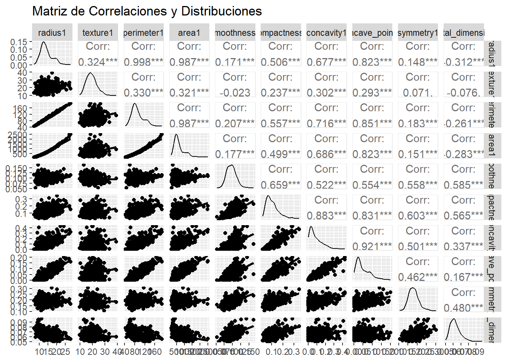

Chapter 7 Análisis multivariante
7.1 Análisis descriptivo detallado de variables numéricas
## Warning: package 'patchwork' was built under R version 4.4.3# Estadísticas descriptivas para radius1
df %>%
summarise(
n = length(radius1),
media = mean(radius1),
ds = sd(radius1),
mediana = median(radius1),
minimo = min(radius1),
maximo = max(radius1),
Q1 = quantile(radius1, 0.25),
Q3 = quantile(radius1, 0.75),
IQR = IQR(radius1)) %>%
mutate(variable = "radius1") -> var_num_rad
# Estadísticas descriptivas para texture1
df %>%
summarise(
n = length(texture1),
media = mean(texture1),
ds = sd(texture1),
mediana = median(texture1),
minimo = min(texture1),
maximo = max(texture1),
Q1 = quantile(texture1, 0.25),
Q3 = quantile(texture1, 0.75),
IQR = IQR(texture1)) %>%
mutate(variable = "texture1") -> var_num_tex
# Estadísticas descriptivas para perimeter1
df %>%
summarise(
n = length(perimeter1),
media = mean(perimeter1),
ds = sd(perimeter1),
mediana = median(perimeter1),
minimo = min(perimeter1),
maximo = max(perimeter1),
Q1 = quantile(perimeter1, 0.25),
Q3 = quantile(perimeter1, 0.75),
IQR = IQR(perimeter1)) %>%
mutate(variable = "perimeter1") -> var_num_per
# Combinar todas las estadísticas
estadisticas_completas <- bind_rows(var_num_rad, var_num_tex, var_num_per) %>%
select(variable, everything())
print(estadisticas_completas)## variable n media ds mediana minimo maximo Q1 Q3 IQR
## 1 radius1 569 14.12729 3.524049 13.37 6.981 28.11 11.70 15.78 4.08
## 2 texture1 569 19.28965 4.301036 18.84 9.710 39.28 16.17 21.80 5.63
## 3 perimeter1 569 91.96903 24.298981 86.24 43.790 188.50 75.17 104.10 28.93# Boxplot de radius1
p1 <- df %>%
ggplot(aes(x="", y = radius1)) +
geom_boxplot(fill = "#1f77b4", alpha = 0.7) +
labs(
title = "Distribución del Radio",
y = "RADIO (MM)",
x = ""
) +
theme_bw()
# Boxplot de texture1
p2 <- df %>%
ggplot(aes(x="", y = texture1)) +
geom_boxplot(fill = "#2ca02c", alpha = 0.7) +
labs(
title = "Distribución de la Textura",
y = "TEXTURE (MM)",
x = ""
) +
theme_bw()
# Boxplot de perimeter1
p3 <- df %>%
ggplot(aes(x="", y = perimeter1)) +
geom_boxplot(fill = "#d62728", alpha = 0.7) +
labs(
title = "Distribución del Perímetro",
y = "PERÍMETRO (MM)",
x = ""
) +
theme_bw()
# Unir los tres gráficos en una sola visualización
p1 + p2 + p3Los diagramas de caja muestran la distribución de tres características de los tumores: radio, textura y perímetro. En general, las tres variables presentan una concentración central de valores con medianas alrededor de 14 mm para el radio, 18 mm para la textura y 90 mm para el perímetro. En los tres casos se observan valores atípicos hacia la parte superior, lo que indica la presencia de tumores con medidas considerablemente mayores al promedio, siendo más notorio en el radio y el perímetro. La dispersión es moderada y simétrica en el rango intercuartílico, lo que sugiere que la mayoría de los tumores tienen dimensiones relativamente homogéneas, mientras que los valores extremos corresponden a casos menos frecuentes con dimensiones significativamente más altas.
7.2 Análisis multivariante completo
# Matriz de gráficos de dispersión
numeric_vars <- df %>% select(where(is.numeric), -ID)
ggpairs(numeric_vars,
title = "Matriz de Correlaciones y Distribuciones",
lower = list(continuous = "smooth"),
diag = list(continuous = "densityDiag"))
# Análisis de correlación específico para radius, texture y perimeter
variables_principales <- df %>% select(radius1, texture1, perimeter1)
cat("\nMatriz de correlación entre variables principales:\n")##
## Matriz de correlación entre variables principales:## radius1 texture1 perimeter1
## radius1 1.000 0.324 0.998
## texture1 0.324 1.000 0.330
## perimeter1 0.998 0.330 1.000# Gráfico 3D conceptual usando scatterplot matrix
ggpairs(variables_principales,
title = "Análisis Multivariante: Radio vs Textura vs Perímetro",
lower = list(continuous = wrap("smooth", alpha = 0.3, size = 0.1)),
diag = list(continuous = wrap("densityDiag", alpha = 0.5)),
upper = list(continuous = wrap("cor", size = 4)))El análisis multivariante entre radio (radius1), textura (texture1) y perímetro (perimeter1) muestra que el radio y el perímetro están fuertemente correlacionados (r ≈ 0.998), lo que indica una relación casi lineal directa: a mayor radio, mayor perímetro. La textura presenta correlaciones positivas moderadas tanto con el radio (r ≈ 0.324) como con el perímetro (r ≈ 0.330), lo que sugiere que tumores con radios y perímetros mayores tienden a tener texturas algo más elevadas, aunque esta relación no es tan marcada. Las distribuciones individuales muestran que el radio y el perímetro tienen formas similares, mientras que la textura presenta una dispersión más amplia y simétrica. En conjunto, los resultados indican que el radio y el perímetro son casi equivalentes en comportamiento, mientras que la textura, aunque relacionada, aporta variabilidad independiente.